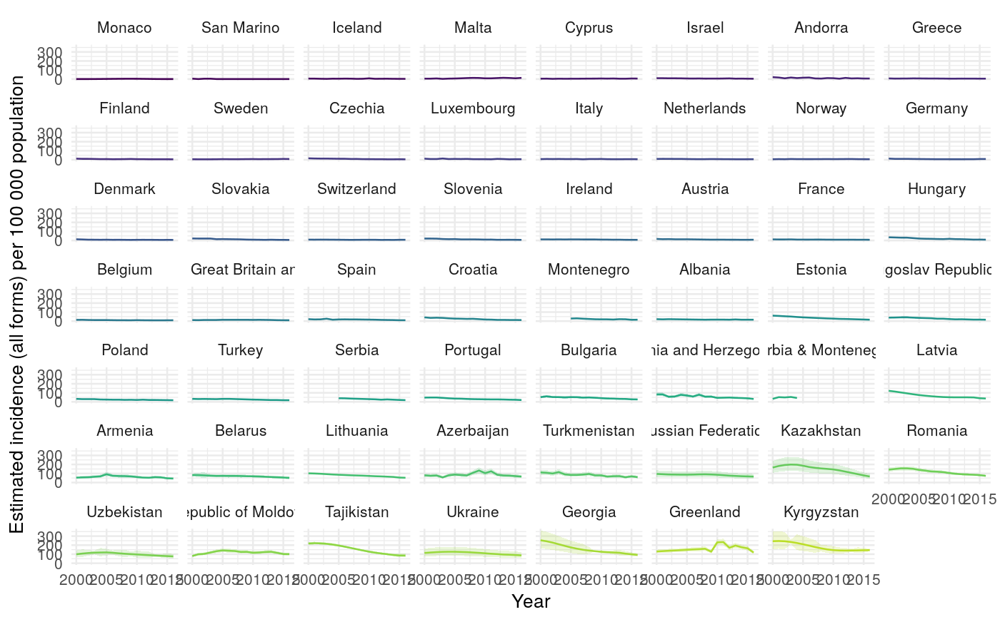
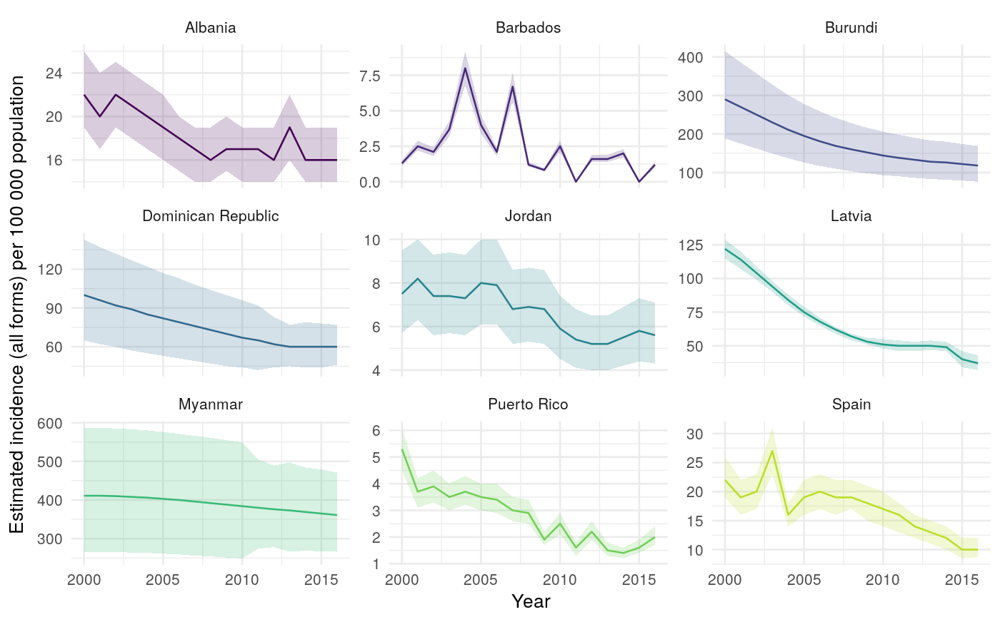
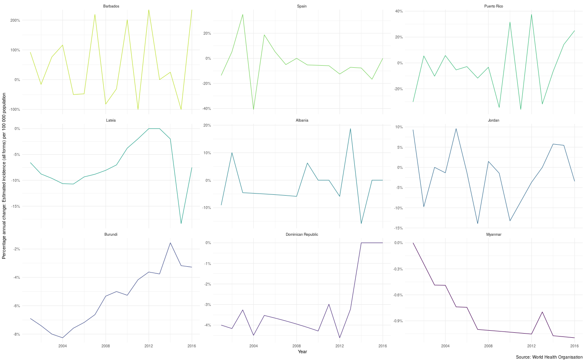
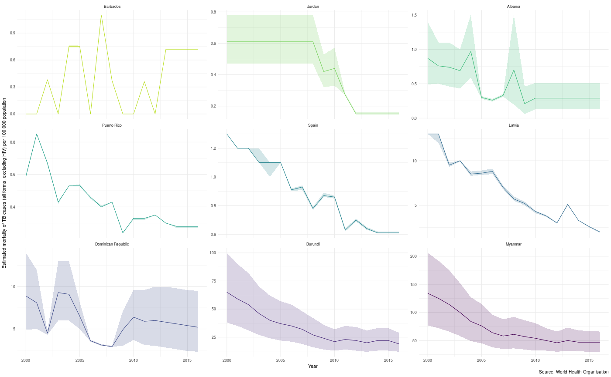

<!-- Generated by pkgdown: do not edit by hand -->
<!DOCTYPE html>
<html lang="en">
  <head>
  <meta charset="utf-8">
<meta http-equiv="X-UA-Compatible" content="IE=edge">
<meta name="viewport" content="width=device-width, initial-scale=1.0">

<title>Plot TB Burden by Country — plot_tb_burden • Get WHO Tuberculosis Data in R</title>

<!-- jquery -->
<script src="https://code.jquery.com/jquery-3.1.0.min.js" integrity="sha384-nrOSfDHtoPMzJHjVTdCopGqIqeYETSXhZDFyniQ8ZHcVy08QesyHcnOUpMpqnmWq" crossorigin="anonymous"></script>
<!-- Bootstrap -->
<link href="https://maxcdn.bootstrapcdn.com/bootswatch/3.3.7/lumen/bootstrap.min.css" rel="stylesheet" crossorigin="anonymous">

<script src="https://maxcdn.bootstrapcdn.com/bootstrap/3.3.7/js/bootstrap.min.js" integrity="sha384-Tc5IQib027qvyjSMfHjOMaLkfuWVxZxUPnCJA7l2mCWNIpG9mGCD8wGNIcPD7Txa" crossorigin="anonymous"></script>

<!-- Font Awesome icons -->
<link href="https://maxcdn.bootstrapcdn.com/font-awesome/4.6.3/css/font-awesome.min.css" rel="stylesheet" integrity="sha384-T8Gy5hrqNKT+hzMclPo118YTQO6cYprQmhrYwIiQ/3axmI1hQomh7Ud2hPOy8SP1" crossorigin="anonymous">

<!-- clipboard.js -->
<script src="https://cdnjs.cloudflare.com/ajax/libs/clipboard.js/1.7.1/clipboard.min.js" integrity="sha384-cV+rhyOuRHc9Ub/91rihWcGmMmCXDeksTtCihMupQHSsi8GIIRDG0ThDc3HGQFJ3" crossorigin="anonymous"></script>

<!-- sticky kit -->
<script src="https://cdnjs.cloudflare.com/ajax/libs/sticky-kit/1.1.3/sticky-kit.min.js" integrity="sha256-c4Rlo1ZozqTPE2RLuvbusY3+SU1pQaJC0TjuhygMipw=" crossorigin="anonymous"></script>

<!-- pkgdown -->
<link href="../pkgdown.css" rel="stylesheet">
<script src="../pkgdown.js"></script>


<meta property="og:title" content="Plot TB Burden by Country — plot_tb_burden" />

<meta property="og:description" content="Plot measures of TB burden by country by specifying a metric from the TB burden data.
Specify a country or vector of countries in order to plot them (by default plots all countries).
Various other options are available for tuning the plot further." />
<meta name="twitter:card" content="summary" />


<!-- mathjax -->
<script src='https://mathjax.rstudio.com/latest/MathJax.js?config=TeX-AMS-MML_HTMLorMML'></script>

<!--[if lt IE 9]>
<script src="https://oss.maxcdn.com/html5shiv/3.7.3/html5shiv.min.js"></script>
<script src="https://oss.maxcdn.com/respond/1.4.2/respond.min.js"></script>
<![endif]-->


  </head>

  <body>
    <div class="container template-reference-topic">
      <header>
      <div class="navbar navbar-inverse navbar-fixed-top" role="navigation">
  <div class="container">
    <div class="navbar-header">
      <button type="button" class="navbar-toggle collapsed" data-toggle="collapse" data-target="#navbar" aria-expanded="false">
        <span class="sr-only">Toggle navigation</span>
        <span class="icon-bar"></span>
        <span class="icon-bar"></span>
        <span class="icon-bar"></span>
      </button>
      <span class="navbar-brand">
        <a class="navbar-link" href="../index.html">Get WHO Tuberculosis Data in R</a>
        <span class="label label-default" data-toggle="tooltip" data-placement="bottom" title="Released version">0.5.5</span>
      </span>
    </div>

    <div id="navbar" class="navbar-collapse collapse">
      <ul class="nav navbar-nav">
        <li>
  <a href="../index.html">Home</a>
</li>
<li>
  <a href="../articles/intro.html">Getting Started</a>
</li>
<li class="dropdown">
  <a href="#" class="dropdown-toggle" data-toggle="dropdown" role="button" aria-expanded="false">
    Case Studies
     
    <span class="caret"></span>
  </a>
  <ul class="dropdown-menu" role="menu">
    <li>
      <a href="../articles/case_study_global_trends.html">Exploring Global Trends in Tuberculosis Incidence Rates</a>
    </li>
    <li>
      <a href="../articles/case_fatality_rate.html">Exploring Estimates of the Tuberculosis Case Fatality Ratio</a>
    </li>
  </ul>
</li>
<li class="dropdown">
  <a href="#" class="dropdown-toggle" data-toggle="dropdown" role="button" aria-expanded="false">
    Dashboards
     
    <span class="caret"></span>
  </a>
  <ul class="dropdown-menu" role="menu">
    <li>
      <a href="http://www.seabbs.co.uk/shiny/ExploreGlobalTB/">Explore Global Tuberculosis</a>
    </li>
  </ul>
</li>
      </ul>
      
      <ul class="nav navbar-nav navbar-right">
        <li>
  <a href="../reference/index.html">
    <span class="fa fa-file-code-o"></span>
     
    Functions
  </a>
</li>
<li class="dropdown">
  <a href="#" class="dropdown-toggle" data-toggle="dropdown" role="button" aria-expanded="false">
    News
     
    <span class="caret"></span>
  </a>
  <ul class="dropdown-menu" role="menu">
    <li>
      <a href="https://www.samabbott.co.uk/tags/who/">Blog posts</a>
    </li>
    <li class="divider"></li>
    <li>
      <a href="../news/index.html">Change log</a>
    </li>
  </ul>
</li>
<li>
  <a href="https://github.com/seabbs/getTBinR">
    <span class="fa fa-github fa-lg"></span>
     
    Github
  </a>
</li>
      </ul>
      
    </div><!--/.nav-collapse -->
  </div><!--/.container -->
</div><!--/.navbar -->

      
      </header>

<div class="row">
  <div class="col-md-9 contents">
    <div class="page-header">
    <h1>Plot TB Burden by Country</h1>
    <small class="dont-index">Source: <a href='https://github.com/seabbs/getTBinR/blob/master/R/plot_tb_burden.R'><code>R/plot_tb_burden.R</code></a></small>
    <div class="hidden name"><code>plot_tb_burden.Rd</code></div>
    </div>

    <div class="ref-description">
    
    <p>Plot measures of TB burden by country by specifying a metric from the TB burden data.
Specify a country or vector of countries in order to plot them (by default plots all countries).
Various other options are available for tuning the plot further.</p>
    
    </div>

    <pre class="usage"><span class='fu'>plot_tb_burden</span>(<span class='kw'>df</span> <span class='kw'>=</span> <span class='kw'>NULL</span>, <span class='kw'>dict</span> <span class='kw'>=</span> <span class='kw'>NULL</span>, <span class='kw'>metric</span> <span class='kw'>=</span> <span class='st'>"e_inc_100k"</span>,
  <span class='kw'>metric_label</span> <span class='kw'>=</span> <span class='kw'>NULL</span>, <span class='kw'>conf</span> <span class='kw'>=</span> <span class='fu'>c</span>(<span class='st'>"_lo"</span>, <span class='st'>"_hi"</span>), <span class='kw'>countries</span> <span class='kw'>=</span> <span class='kw'>NULL</span>,
  <span class='kw'>years</span> <span class='kw'>=</span> <span class='kw'>NULL</span>, <span class='kw'>compare_to_region</span> <span class='kw'>=</span> <span class='fl'>FALSE</span>, <span class='kw'>facet</span> <span class='kw'>=</span> <span class='kw'>NULL</span>,
  <span class='kw'>annual_change</span> <span class='kw'>=</span> <span class='fl'>FALSE</span>, <span class='kw'>trans</span> <span class='kw'>=</span> <span class='st'>"identity"</span>, <span class='kw'>scales</span> <span class='kw'>=</span> <span class='st'>"fixed"</span>,
  <span class='kw'>interactive</span> <span class='kw'>=</span> <span class='fl'>FALSE</span>, <span class='kw'>download_data</span> <span class='kw'>=</span> <span class='fl'>TRUE</span>, <span class='kw'>save</span> <span class='kw'>=</span> <span class='fl'>TRUE</span>,
  <span class='kw'>burden_save_name</span> <span class='kw'>=</span> <span class='st'>"TB_burden"</span>, <span class='kw'>dict_save_name</span> <span class='kw'>=</span> <span class='st'>"TB_data_dict"</span>,
  <span class='kw'>viridis_palette</span> <span class='kw'>=</span> <span class='st'>"viridis"</span>, <span class='kw'>viridis_direction</span> <span class='kw'>=</span> -<span class='fl'>1</span>,
  <span class='kw'>viridis_end</span> <span class='kw'>=</span> <span class='fl'>0.9</span>, <span class='kw'>verbose</span> <span class='kw'>=</span> <span class='fl'>TRUE</span>, <span class='no'>...</span>)</pre>
    
    <h2 class="hasAnchor" id="arguments"><a class="anchor" href="#arguments"></a>Arguments</h2>
    <table class="ref-arguments">
    <colgroup><col class="name" /><col class="desc" /></colgroup>
    <tr>
      <th>df</th>
      <td><p>Dataframe of TB burden data, as sourced by <code><a href='get_tb_burden.html'>get_tb_burden</a></code>.
If not specified then will source the WHO TB burden data, either locally if available
or directly from the WHO (if <code>download_data = TRUE</code>).</p></td>
    </tr>
    <tr>
      <th>dict</th>
      <td><p>A tibble of the data dictionary. See <code><a href='get_data_dict.html'>get_data_dict</a></code>
for details. If not supplied the function will attempt to load a saved version of the
dictionary. If this fails and <code>download_data = TRUE</code> then the dictionary will be downloaded.</p></td>
    </tr>
    <tr>
      <th>metric</th>
      <td><p>Character string specifying the metric to plot</p></td>
    </tr>
    <tr>
      <th>metric_label</th>
      <td><p>Character string specifying the metric label to use.</p></td>
    </tr>
    <tr>
      <th>conf</th>
      <td><p>Character vector specifying the name variations to use to specify the upper
and lower confidence intervals. Defaults to c("_lo", "_hi"), if set to <code>NULL</code>
then no confidence intervals are shown. When <code>annual_change = TRUE</code> the confidence
intervals represent the annual percentage change in the metrics confidence intervals.</p></td>
    </tr>
    <tr>
      <th>countries</th>
      <td><p>A character string specifying the countries to plot.</p></td>
    </tr>
    <tr>
      <th>years</th>
      <td><p>Numeric vector of years. Defaults to <code>NULL</code> which includes all years in the data.</p></td>
    </tr>
    <tr>
      <th>compare_to_region</th>
      <td><p>Logical, defaults to <code>FALSE</code>. If <code>TRUE</code> all
countries that share a region with those listed in <code>countries</code> will be plotted.
Note that this will override settings for <code>facet</code>, unless it is set to "country".</p></td>
    </tr>
    <tr>
      <th>facet</th>
      <td><p>Character string, the name of the variable to facet by.</p></td>
    </tr>
    <tr>
      <th>annual_change</th>
      <td><p>Logical, defaults to <code>FALSE</code>. If <code>TRUE</code> then the
percentage annual change is computed for the specified metric.</p></td>
    </tr>
    <tr>
      <th>trans</th>
      <td><p>A character string specifying the transform to use on the specified metric. Defaults to no
transform ("identity"). Other options include log scaling ("log") and log base 10 scaling
("log10"). For a complete list of options see <code>ggplot2::continous_scale</code>.</p></td>
    </tr>
    <tr>
      <th>scales</th>
      <td><p>Character string, see ?ggplot2::facet_wrap for details. Defaults to "fixed",
alternatives are "free_y", "free_x", or "free".</p></td>
    </tr>
    <tr>
      <th>interactive</th>
      <td><p>Logical, defaults to <code>FALSE</code>. If <code>TRUE</code> then an interactive plot is
returned.</p></td>
    </tr>
    <tr>
      <th>download_data</th>
      <td><p>Logical, defaults to <code>TRUE</code>. If not found locally should the data be
downloaded from the specified URL?</p></td>
    </tr>
    <tr>
      <th>save</th>
      <td><p>Logical, should the data be saved for reuse during the current R session. Defaults to
<code>TRUE</code>. If <code>TRUE</code> then the data is saved to the temporary directory specified by <code><a href='http://www.rdocumentation.org/packages/base/topics/tempfile'>tempdir</a></code>.</p></td>
    </tr>
    <tr>
      <th>burden_save_name</th>
      <td><p>Character string, name to save the data under. Defaults to
"TB_burden".</p></td>
    </tr>
    <tr>
      <th>dict_save_name</th>
      <td><p>Character string, name to save dictionary under. Defaults to
<code>TB_data_dict</code>.</p></td>
    </tr>
    <tr>
      <th>viridis_palette</th>
      <td><p>Character string indicating the <code>viridis</code> colour palette to use. Defaults
to "viridis". Options include "cividis", "magma", "inferno", "plasma", and "viridis". For additional details
see <code><a href='http://www.rdocumentation.org/packages/viridis/topics/viridis_pal'>viridis_pal</a></code> for additional details.</p></td>
    </tr>
    <tr>
      <th>viridis_direction</th>
      <td><p>Numeric, indicating the direction for the colour palette (1 or -1), defaults to -1.
See <code><a href='http://www.rdocumentation.org/packages/viridis/topics/scale_viridis'>scale_color_viridis</a></code> for additional details.</p></td>
    </tr>
    <tr>
      <th>viridis_end</th>
      <td><p>Numeric between 0 and 1, defaults to 0.9. The end point of the viridis scale to use.
#' See <code><a href='http://www.rdocumentation.org/packages/viridis/topics/scale_viridis'>scale_color_viridis</a></code> for additional details.</p></td>
    </tr>
    <tr>
      <th>verbose</th>
      <td><p>Logical, defaults to <code>TRUE</code>. Should additional status and progress messages
be displayed.</p></td>
    </tr>
    <tr>
      <th>...</th>
      <td><p>Additional parameters to pass to <code><a href='get_tb_burden.html'>get_tb_burden</a></code>.</p></td>
    </tr>
    </table>
    
    <h2 class="hasAnchor" id="value"><a class="anchor" href="#value"></a>Value</h2>

    <p>A plot of TB Incidence Rates by Country</p>
    
    <h2 class="hasAnchor" id="see-also"><a class="anchor" href="#see-also"></a>See also</h2>

    <div class='dont-index'><p>get_tb_burden search_data_dict</p></div>
    

    <h2 class="hasAnchor" id="examples"><a class="anchor" href="#examples"></a>Examples</h2>
    <pre class="examples"><div class='input'>
<span class='co'>## Get the WHO TB burden data and the data dictionary</span>
<span class='no'>tb_burden</span> <span class='kw'>&lt;-</span> <span class='fu'><a href='get_tb_burden.html'>get_tb_burden</a></span>()</div><div class='output co'>#&gt; <span class='message'>Loading data from: /tmp/Rtmp2ODvyx/TB_burden.rds</span></div><div class='output co'>#&gt; <span class='message'>Loading data from: /tmp/Rtmp2ODvyx/MDR_TB.rds</span></div><div class='output co'>#&gt; <span class='message'>Joining TB burden data and MDR TB data.</span></div><div class='output co'>#&gt; <span class='message'>Joining, by = c("country", "iso2", "iso3", "iso_numeric", "year")</span></div><div class='input'><span class='no'>dict</span> <span class='kw'>&lt;-</span> <span class='fu'><a href='get_data_dict.html'>get_data_dict</a></span>()</div><div class='output co'>#&gt; <span class='message'>Loading data from: /tmp/Rtmp2ODvyx/TB_data_dict.rds</span></div><div class='input'>
<span class='co'>## Get a random sample of 9 countries</span>
<span class='no'>sample_countries</span> <span class='kw'>&lt;-</span> <span class='fu'>sample</span>(<span class='fu'>unique</span>(<span class='no'>tb_burden</span>$<span class='no'>country</span>), <span class='fl'>9</span>)

<span class='co'>## Plot incidence rates in these countries</span>
<span class='fu'>plot_tb_burden</span>(<span class='kw'>df</span> <span class='kw'>=</span> <span class='no'>tb_burden</span>, <span class='kw'>dict</span> <span class='kw'>=</span> <span class='no'>dict</span>, <span class='kw'>facet</span> <span class='kw'>=</span> <span class='st'>"country"</span>, <span class='kw'>countries</span> <span class='kw'>=</span> <span class='no'>sample_countries</span>)</div><div class='output co'>#&gt; <span class='message'>1 results found for your variable search for e_inc_100k</span></div><div class='img'></div><div class='input'>
<span class='co'>## Use data caching to plot incidence rates with free y scales</span>
<span class='fu'>plot_tb_burden</span>(<span class='kw'>facet</span> <span class='kw'>=</span> <span class='st'>"country"</span>, <span class='kw'>countries</span> <span class='kw'>=</span> <span class='no'>sample_countries</span>, <span class='kw'>scales</span> <span class='kw'>=</span> <span class='st'>"free_y"</span>)</div><div class='output co'>#&gt; <span class='message'>Loading data from: /tmp/Rtmp2ODvyx/TB_burden.rds</span></div><div class='output co'>#&gt; <span class='message'>Loading data from: /tmp/Rtmp2ODvyx/MDR_TB.rds</span></div><div class='output co'>#&gt; <span class='message'>Joining TB burden data and MDR TB data.</span></div><div class='output co'>#&gt; <span class='message'>Joining, by = c("country", "iso2", "iso3", "iso_numeric", "year")</span></div><div class='output co'>#&gt; <span class='message'>Loading data from: /tmp/Rtmp2ODvyx/TB_data_dict.rds</span></div><div class='output co'>#&gt; <span class='message'>1 results found for your variable search for e_inc_100k</span></div><div class='img'></div><div class='input'>
<span class='co'>## Plot annual percentage change in incidence rates in selected countries</span>
<span class='fu'>plot_tb_burden</span>(<span class='kw'>df</span> <span class='kw'>=</span> <span class='no'>tb_burden</span>, <span class='kw'>dict</span> <span class='kw'>=</span> <span class='no'>dict</span>, <span class='kw'>facet</span> <span class='kw'>=</span> <span class='st'>"country"</span>, <span class='kw'>scales</span> <span class='kw'>=</span> <span class='st'>"free_y"</span>,
               <span class='kw'>countries</span> <span class='kw'>=</span> <span class='no'>sample_countries</span>, <span class='kw'>annual_change</span> <span class='kw'>=</span> <span class='fl'>TRUE</span>, <span class='kw'>conf</span> <span class='kw'>=</span> <span class='kw'>NULL</span>)</div><div class='output co'>#&gt; <span class='message'>1 results found for your variable search for e_inc_100k</span></div><div class='img'></div><div class='input'>
<span class='co'>## Find variables relating to mortality in the WHO dataset</span>
<span class='fu'><a href='search_data_dict.html'>search_data_dict</a></span>(<span class='kw'>def</span> <span class='kw'>=</span> <span class='st'>"mortality"</span>)</div><div class='output co'>#&gt; <span class='message'>Loading data from: /tmp/Rtmp2ODvyx/TB_data_dict.rds</span></div><div class='output co'>#&gt; <span class='message'>9 results found for your definition search for mortality</span></div><div class='output co'>#&gt; # A tibble: 9 x 4
#&gt;   variable_name      dataset  code_list definition                             
#&gt;   &lt;chr&gt;              &lt;chr&gt;    &lt;chr&gt;     &lt;chr&gt;                                  
#&gt; 1 e_mort_100k        Estimat… ""        Estimated mortality of TB cases (all f…
#&gt; 2 e_mort_100k_hi     Estimat… ""        Estimated mortality of TB cases (all f…
#&gt; 3 e_mort_100k_lo     Estimat… ""        Estimated mortality of TB cases (all f…
#&gt; 4 e_mort_exc_tbhiv_… Estimat… ""        Estimated mortality of TB cases (all f…
#&gt; 5 e_mort_exc_tbhiv_… Estimat… ""        Estimated mortality of TB cases (all f…
#&gt; 6 e_mort_exc_tbhiv_… Estimat… ""        Estimated mortality of TB cases (all f…
#&gt; 7 e_mort_tbhiv_100k  Estimat… ""        Estimated mortality of TB cases who ar…
#&gt; 8 e_mort_tbhiv_100k… Estimat… ""        Estimated mortality of TB cases who ar…
#&gt; 9 e_mort_tbhiv_100k… Estimat… ""        Estimated mortality of TB cases who ar…</div><div class='input'><span class='co'>## Plot mortality rates (exc HIV) - without progress messages</span>
<span class='fu'>plot_tb_burden</span>(<span class='kw'>metric</span> <span class='kw'>=</span> <span class='st'>"e_mort_exc_tbhiv_100k"</span>, <span class='kw'>facet</span> <span class='kw'>=</span> <span class='st'>"country"</span>,
               <span class='kw'>countries</span> <span class='kw'>=</span> <span class='no'>sample_countries</span>, <span class='kw'>scales</span> <span class='kw'>=</span> <span class='st'>"free_y"</span>, <span class='kw'>verbose</span> <span class='kw'>=</span> <span class='fl'>FALSE</span>)</div><div class='output co'>#&gt; <span class='message'>Joining, by = c("country", "iso2", "iso3", "iso_numeric", "year")</span></div><div class='img'></div><div class='input'>               
</div></pre>
  </div>
  <div class="col-md-3 hidden-xs hidden-sm" id="sidebar">
    <h2>Contents</h2>
    <ul class="nav nav-pills nav-stacked">
      <li><a href="#arguments">Arguments</a></li>
      
      <li><a href="#value">Value</a></li>

      <li><a href="#see-also">See also</a></li>
      
      <li><a href="#examples">Examples</a></li>
    </ul>

  </div>
</div>

      <footer>
      <div class="copyright">
  <p>Developed by Sam Abbott.</p>
</div>

<div class="pkgdown">
  <p>Site built with <a href="http://pkgdown.r-lib.org/">pkgdown</a>.</p>
</div>

      </footer>
   </div>

  

  </body>
</html>

